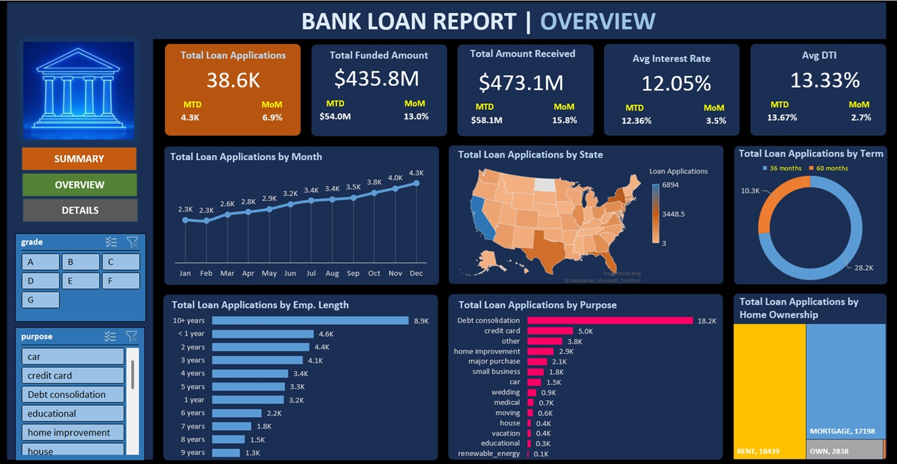
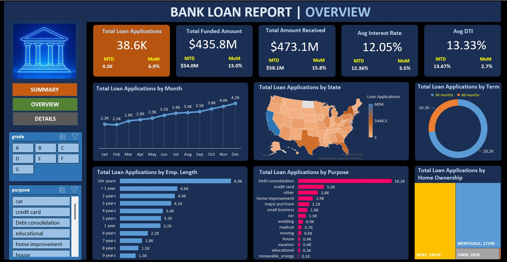
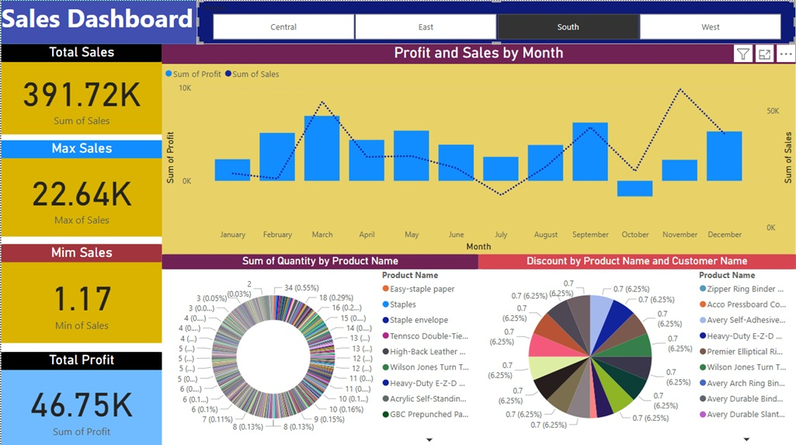
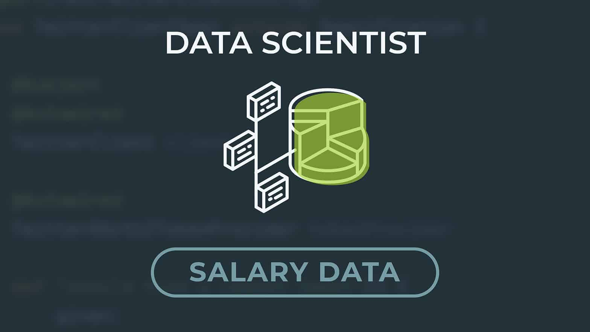

June 03, 2025
In this project, I demonstrate how machine learning algorithms like Logistic Regression, Random Forest, and Decision Tree
can be used to predict diabetes using real-world health indicator data. The study includes data preprocessing, model evaluation
(accuracy, precision, recall, F1 score, AUC), and a comparative analysis to determine the best-performing model.
 

I applied a bank loan dataset consisting of 38,576 records and 25 features to develop two dashboards.
A one dashboard reveals a summary of the loan information such as good and bad loans, the amount funded and repayment.
The other dashboard gives an overview, showing trends such as loan applications by month, purpose, state, term and employment length.
These dashboards allow easy visualization of how loans are performing and customer trends in an easy to interpret manner.

This project demonstrates that the West region leads in performance with the highest sales (725.46K) and consistent growth, making it ideal for further investment.
The East shows strong potential with peaks in September and November. The Central region is stable with a notable September spike,
while the South has lower sales (391.72K) but higher profit per sale, requiring strategies to stabilize performance.

The salary dataset of the data science industry mainly deals with crucial factors like working years, experience level, employment type, employment resident, remote ratio,
company location and company size that influence the salary of employees in the data science industry. It is very significant to identify how factors play a role in determining salaries among employees.
By analyzing the dataset and applying data visualization techniques through tableau, my main purpose is to provide insight for taking better organizational strategies
to address its problems in the context of primary research question and sub-research questions.